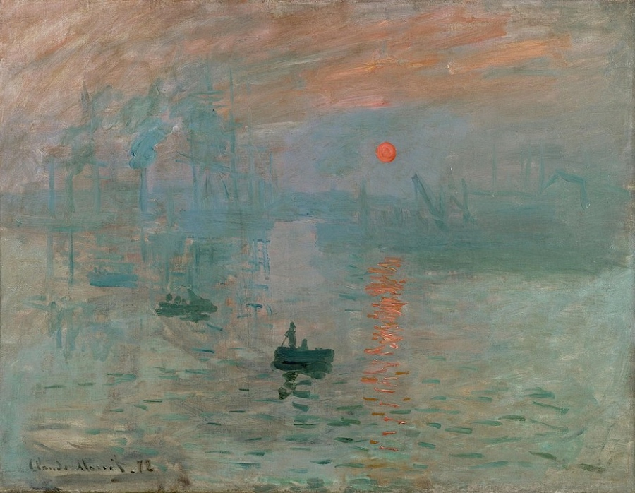
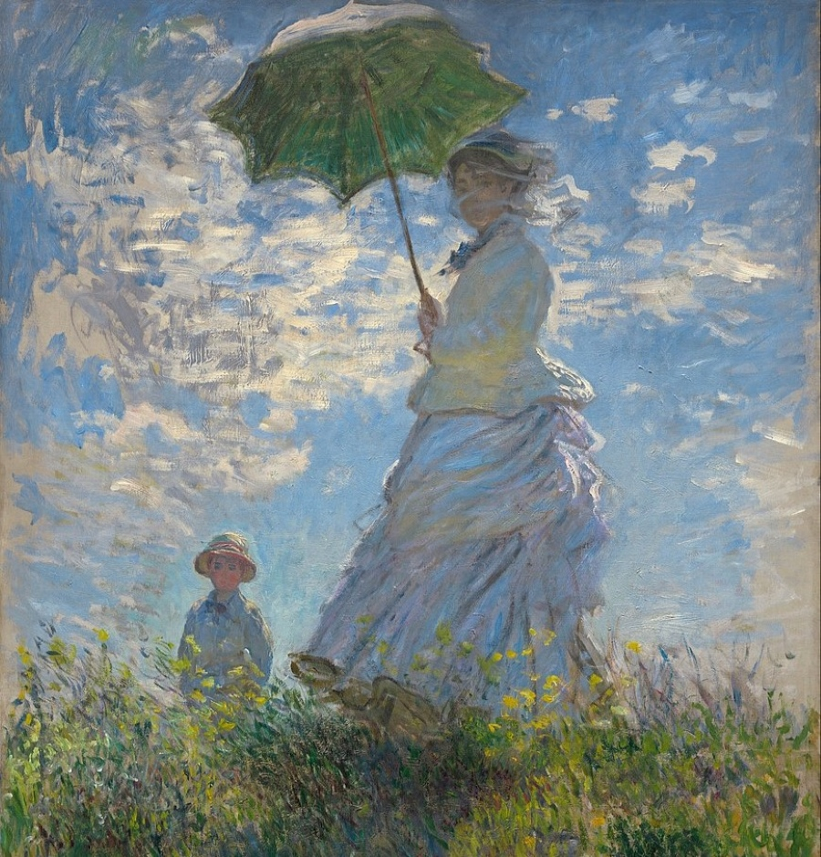
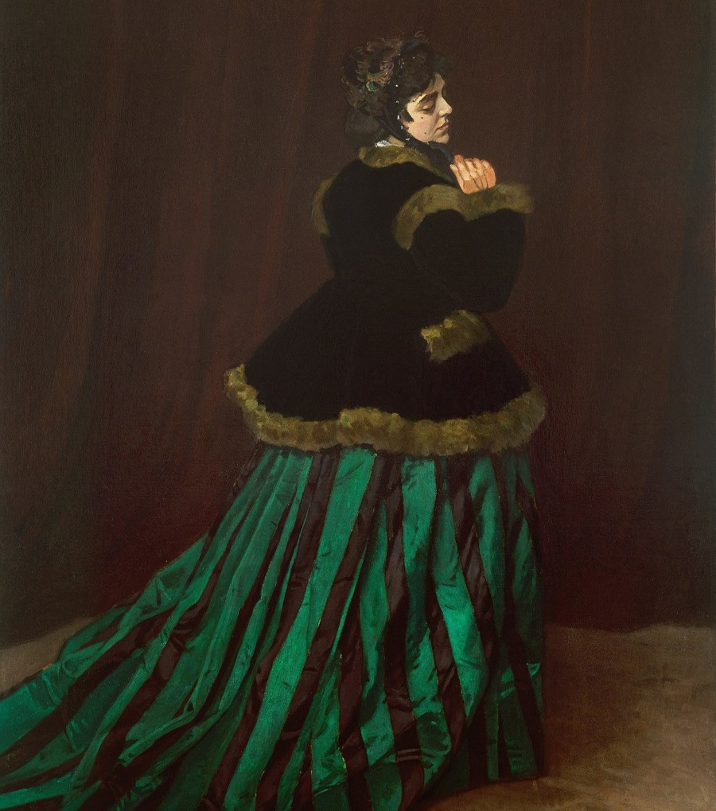
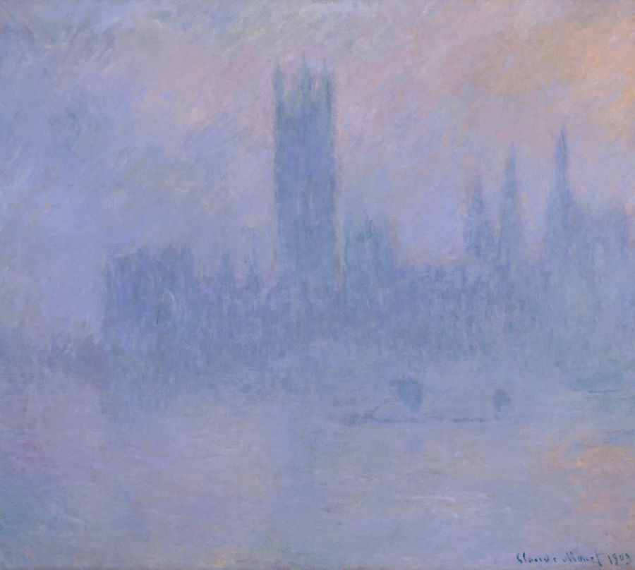
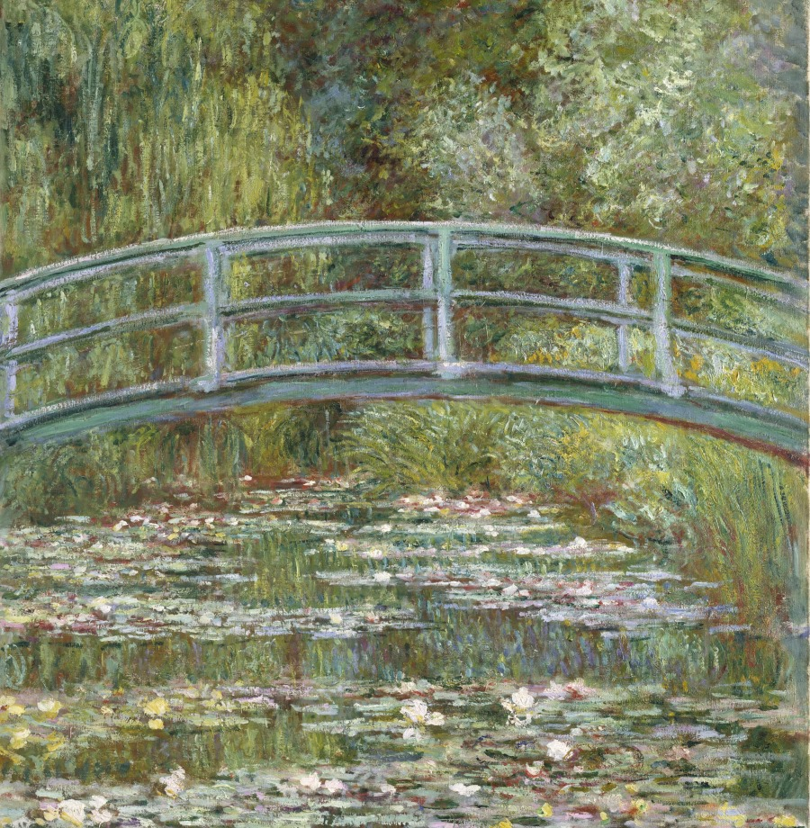
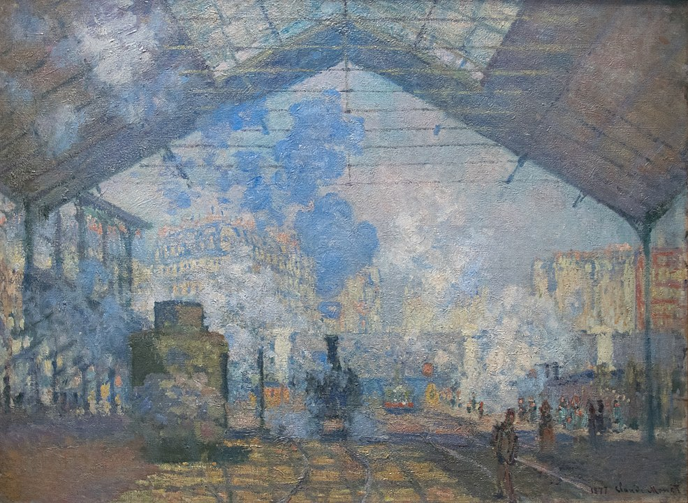
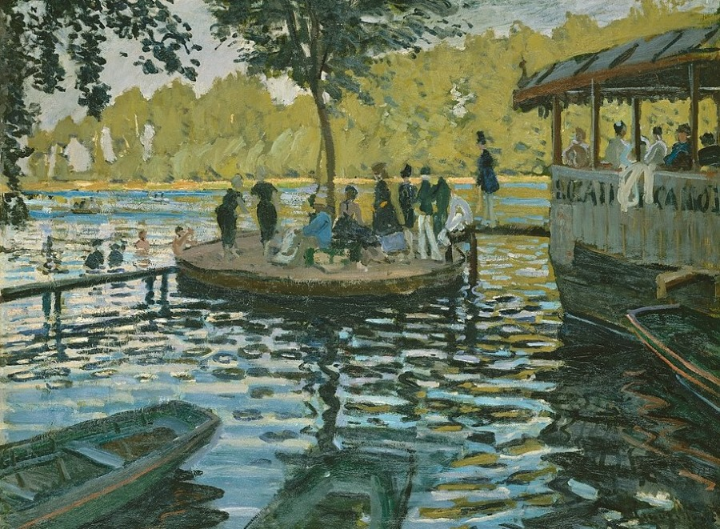
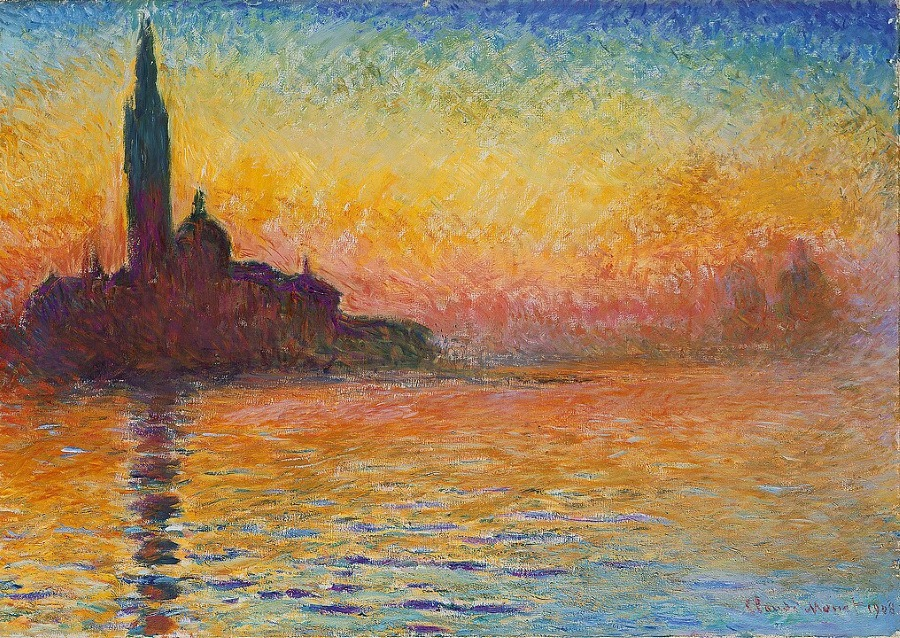

‘Impression, Sunrise’ (1872)

‘Woman with a Parasol – Madame Monet and Her Son’ (1875)

‘‘Water Lilies’ (1896 – 1926)

‘Camille’ (1866)

‘Houses of Parliament’ (1900 – 1904)

‘Japanese Bridge over a Pond of Water Lilies’ (1899)

‘The Saint-Lazare Station’ (1877)

‘La Grenouillère’ (1869)

‘San Giorgio Maggiore at Dusk’ (1908 – 1912)